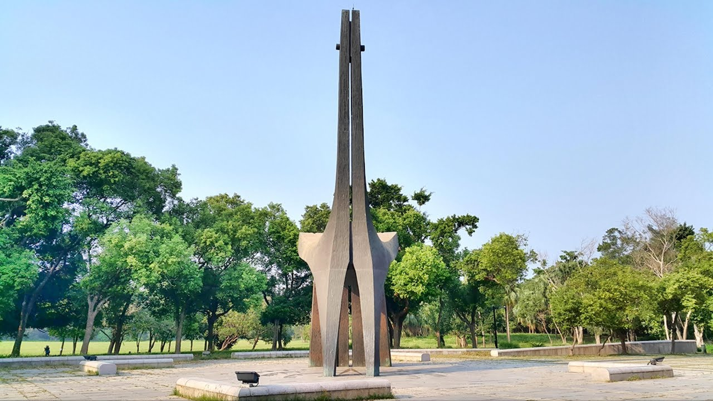
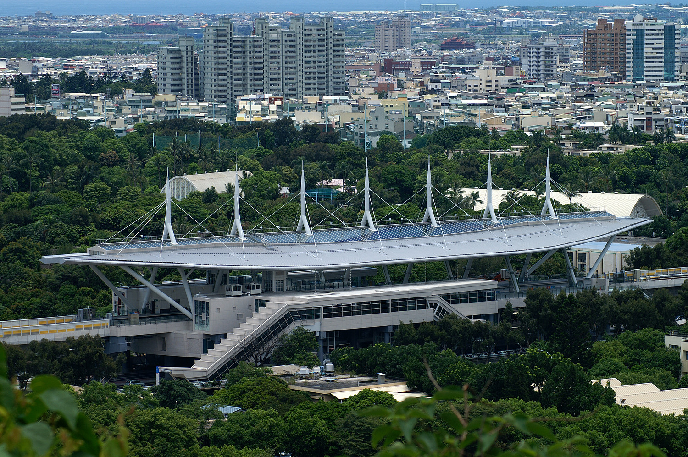

第三個景點-楠梓
高雄都會公園
高雄都會公園位於高雄市楠梓區，面積約為95公頃，範圍以台糖青埔農場為主，園區以區域型森林公園設計，
提供高雄市縣民眾及遊客優良的休閒場所，園區內的中央廣場設有「金雞報時」的日晷雕塑為都會公園之地標，
另外，動態活動區則提供遊客遊戲、運動、休閒及閱讀等動態遊憩活動，森林植物區是由垃圾掩埋場經人工綠化所規劃而成，遍植林木並以步道串連，
另設有休憩涼亭，提供遊客及民眾散步休閒的好場所。

空中的雨林-高捷世運站
「空中的雨林-高捷世運站」是高雄捷運紅線由南向北穿越高屏山的高架站，鄰近左營海軍軍區，
外觀設計為白色帆船，站體內設計以空中雨林為主軸，由WJI團隊的藝術家創作，
把曾存在於南台灣的昆蟲植物等印製成塑膠薄片，以特殊技術壓合於安全玻璃之間，分布於車站的採光天窗上，
使整個空間呈現出雨林的樣貌，於陽光下透射出光影迷離，不論晴雨都有其不同的風情，讓人彷彿置身於雨林中，也借此提醒著旅客們能夠更重視大自然與人類之間的關係。

連到首頁
連到第2頁
連到第4頁
連到第5頁
連到第6頁